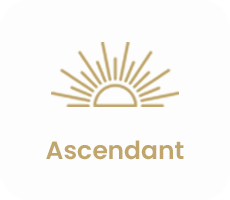
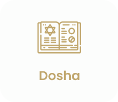
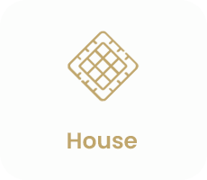
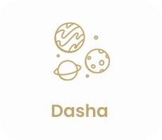
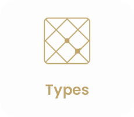
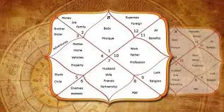

A Kundli or Kundali is also known as the birth chart, is simply an astrological chart that provides insights into your life events by analyzing positions of celestial bodies. Consider it the horoscope by date of birth, as it only uses your date of birth, place, and time.
Enter your birth details to generate your personalized Janam Kundli snapshot.
A Janam Kundali, or Birth chart, is like a cosmic blueprint of your life. Vedic astrologers create your Kundli based on your exact birth date, birthplace, and birth time. It's like a roadmap that shows the exact positions of planets, zodiac signs, houses, and all major astrological aspects present at the time of your birth. These aspects in your natal or birth chart are considered significant in an astrological analysis.
Vedic astrology uses your Kundli chart to interpret your destiny, personality, strengths, and weaknesses. Astrologers can provide insights into various aspects of your life, including career, relationships, and wealth, by analyzing your Kundli online or offline. Moreover, your Janam Kundali can reveal patterns and influences that can shape your journey through life.
Creating a Kundli by date of birth and time is critical to getting the most accurate and precise horoscope chart. Since each person is unique from birth, knowing your exact birth moment can help you obtain accurate astrological information for making your Kundli. Without these specifics, your Kundali prediction will be incomplete. During an online consultation, our astrologers will request your birth details to create a unique and detailed birth chart.
With the help of a Janam Kundli or online horoscope reading, you can gain personalized insights into your life. It provides these benefits essential throughout your life:
Deal With Ups and Downs: It helps you identify your good and bad times and navigate through ups and downs.
Reveals Your Purpose in Life: Your Kundli reveals your life's purpose, destiny and karmic patterns — a road map for your journey.
Helps in Taking Better Decisions: With a birth chart calculator you can make better decisions about career, education, love, marriage, money and family.
Deal With Doshas: Your Kundli can assist you in overcoming obstacles and dealing with doshas, improving your overall well-being.
Navigate Issues in Relationships: Understanding your Kundli helps you navigate relationships with family and friends, fixing communication issues and building harmonious connections.
Deeper Understanding of Yourself: Connecting with your Kundli helps gain a deeper understanding of who you are — a manual for personal development and self-discovery.
Astrology has gone digital, making it more accessible than ever. AstroFeeds's free Kundali making software generates an online horoscope for free. AstroFeeds's Kundali software is a feature trusted by millions of users across the globe to get accurate and detailed predictions about themselves. Our free online kundali maker will provide you with a thorough understanding of your destiny, allowing you to make more accurate and precise decisions in life.
If you want to get your Kundli online, our mobile app, available on Android and iOS, will be a valuable asset. It has some fabulous features for astrology enthusiasts. Our Kundli software is multilingual and supports both English and Hindi. So, whether you want your Janam kundli in Hindi or English, our software will provide immediate access to your birth chart information.
Once you have a basic analysis of your horoscope, you can consult AstroFeeds's expert astrologers online for more detailed and accurate Kundli predictions. The best thing is that you can talk to the top astrologers online 24/7, from the convenience of your home or on the go.
If you want to talk to professional Kundli Astrologers on AstroFeeds, click here.You can utilize this online Kundli software to generate a free Janam Kundli; it holds the key to realizing your full potential and understanding the course of your life. As you already know, your Kundli can help in finding the right partner for marriage, new career opportunities, launching a business, and even making sure everything goes smoothly in the present. The astrological Kundli maker offers accurate information about you based on astrological calculations and planetary positions.
With AstroFeeds's free Kundli-making tool, you can verify some of the following information:
Horoscope chart with a geometrical diagram consisting of planets, zodiac lords, and kundali houses
Planetary details during your birth
Kundli Dosha, whether present or absent
Daily Nakshatra predictions
Planetary Dasha details
Favorable Vedic astrology and Numerology details
Remedies
Get in Touch with AstroFeeds Experts for a Kundli Analysis
AstroFeeds's Kundli page provides a free online Kundli that contains all the basic information required to
analyze your horoscope. After all, astrology is a vast and deep ocean of knowledge.
Therefore, to fully understand the intricacies of your Kundli and receive accurate interpretations and predictions, consult the top astrologers on AstroFeeds via call or chat.